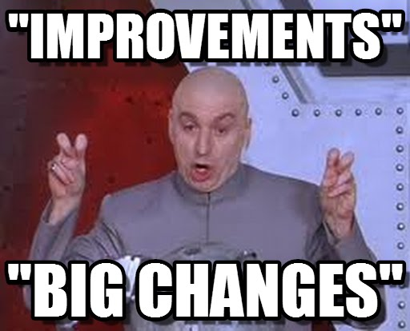

<!DOCTYPE html>
<html lang="en">
  <head>
    <meta charset="utf-8" />
    <meta name="viewport" content="width=device-width, initial-scale=1.0, maximum-scale=1.0, user-scalable=no" />

    <title>reveal-md</title>
    <link rel="shortcut icon" href="./favicon.ico" />
    <link rel="stylesheet" href="./dist/reset.css" />
    <link rel="stylesheet" href="./dist/reveal.css" />
    <link rel="stylesheet" href="./dist/theme/moon.css" id="theme" />
    <link rel="stylesheet" href="./css/highlight/base16/zenburn.css" />

    <link rel="stylesheet" href="./assets/styles.css" />

  </head>
  <body>
    <div class="reveal">
      <div class="slides"><section  data-markdown><script type="text/template"># Feature Flags
</script></section><section ><section data-markdown><script type="text/template">
## Wait what flags?


(Btw, also known as feature toggles or switches.)
</script></section><section data-markdown><script type="text/template">
### Simply taken

Turn certain functionality on and of during runtime, without deploying new code.
</script></section><section data-markdown><script type="text/template">
### Where is it used?

- Twitter, Facebook, Youtube, Twitch, etc.
- Web Browsers (see [chrome://flags](chrome://flags))
- GitHub ([GitHub blog post](https://github.blog/2021-04-27-ship-code-faster-safer-feature-flags/))
</script></section><section data-markdown><script type="text/template">
### Use-Cases

- UI Changes (layout, verbiage/copy)
- Payment Providers (enabling/disabling)
- Gradual Rollouts (rolling out to portions of your user base at a time)
- Single source of truth for pricing changes


</script></section></section><section ><section data-markdown><script type="text/template">
## Why?
</script></section><section data-markdown><script type="text/template">
### Time


</script></section><section data-markdown><script type="text/template">
### Best case - continuous delivery

Projects can take upwards of 20 to 30 minutes to build and test

Per environment
</script></section><section data-markdown><script type="text/template">
### Worst case - Mobile apps

Easily can take a week

- Review process
- Possible changes


</script></section></section><section ><section data-markdown><script type="text/template">
## Options
</script></section><section data-markdown><script type="text/template">
### PROPRIETARY (SAAS ONLY)

- LaunchDarkly
- Split.io
- AWS AppConfig
- Firebase RemoteConfig
- DevCycle
- Optimizely
</script></section><section data-markdown><script type="text/template">
### OPEN SOURCE (DOCKER-BASED OR SAAS)

- Unleash
- GrowthBook
- Flagsmith
- Flipt
- FeatureHub
</script></section><section data-markdown><script type="text/template">
### CLIENT BASED (JUST REMOTE JSON):

- Vexilla (Open Source, very simple)
</script></section></section><section ><section data-markdown><script type="text/template">
## Have I used these in the past?


</script></section><section data-markdown><script type="text/template">
### Optimizely

- Just out of curiosity
- In an old React pet project
- I still have the config
</script></section><section data-markdown><script type="text/template">
### Vexilla

- Couldn't fully configure it yet
- Wanted to check it working with GitHub
</script></section><section data-markdown><script type="text/template">
### Split.io

- Just checked out the platform
</script></section></section><section  data-markdown><script type="text/template">
## Credits

Inspired by [@cmgriffing](https://twitch.com/cmgriffing) (building Vexilla)
</script></section><section  data-markdown><script type="text/template">
## That's it ¯\\\_(ツ)\_/¯
</script></section></div>
    </div>

    <script src="./dist/reveal.js"></script>

    <script src="./plugin/markdown/markdown.js"></script>
    <script src="./plugin/highlight/highlight.js"></script>
    <script src="./plugin/zoom/zoom.js"></script>
    <script src="./plugin/notes/notes.js"></script>
    <script src="./plugin/math/math.js"></script>
    <script>
      function extend() {
        var target = {};
        for (var i = 0; i < arguments.length; i++) {
          var source = arguments[i];
          for (var key in source) {
            if (source.hasOwnProperty(key)) {
              target[key] = source[key];
            }
          }
        }
        return target;
      }

      // default options to init reveal.js
      var defaultOptions = {
        controls: true,
        progress: true,
        history: true,
        center: true,
        transition: 'default', // none/fade/slide/convex/concave/zoom
        slideNumber: true,
        plugins: [
          RevealMarkdown,
          RevealHighlight,
          RevealZoom,
          RevealNotes,
          RevealMath
        ]
      };

      // options from URL query string
      var queryOptions = Reveal().getQueryHash() || {};

      var options = extend(defaultOptions, {"controls":true,"progress":true,"history":true,"center":true,"slideNumber":true}, queryOptions);
    </script>


    <script>
      Reveal.initialize(options);
    </script>
  </body>
</html>
